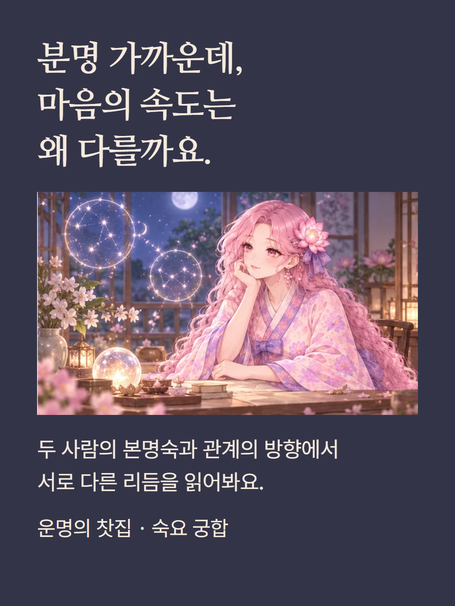
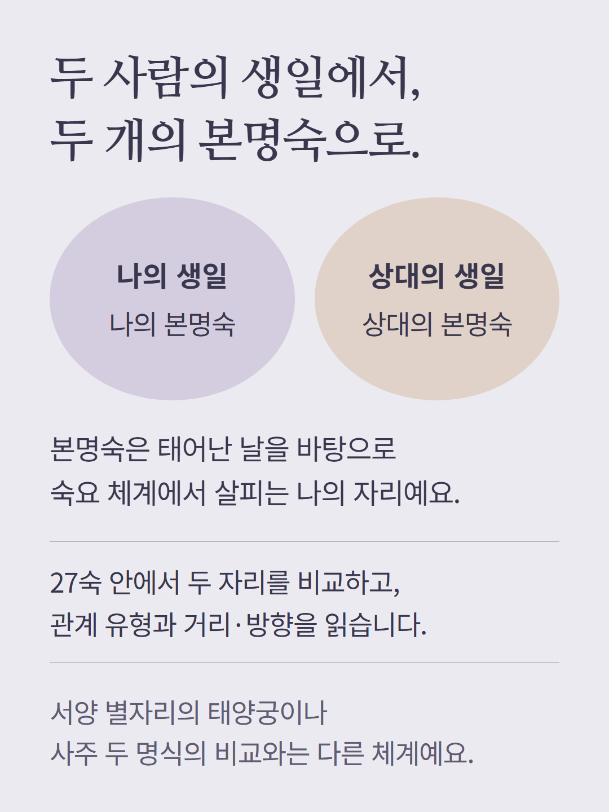
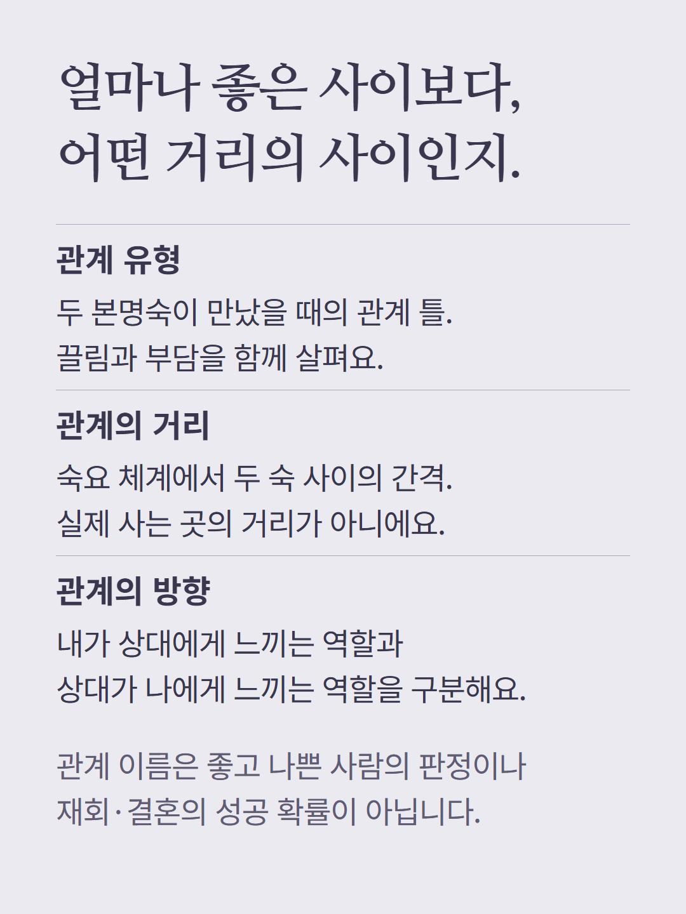
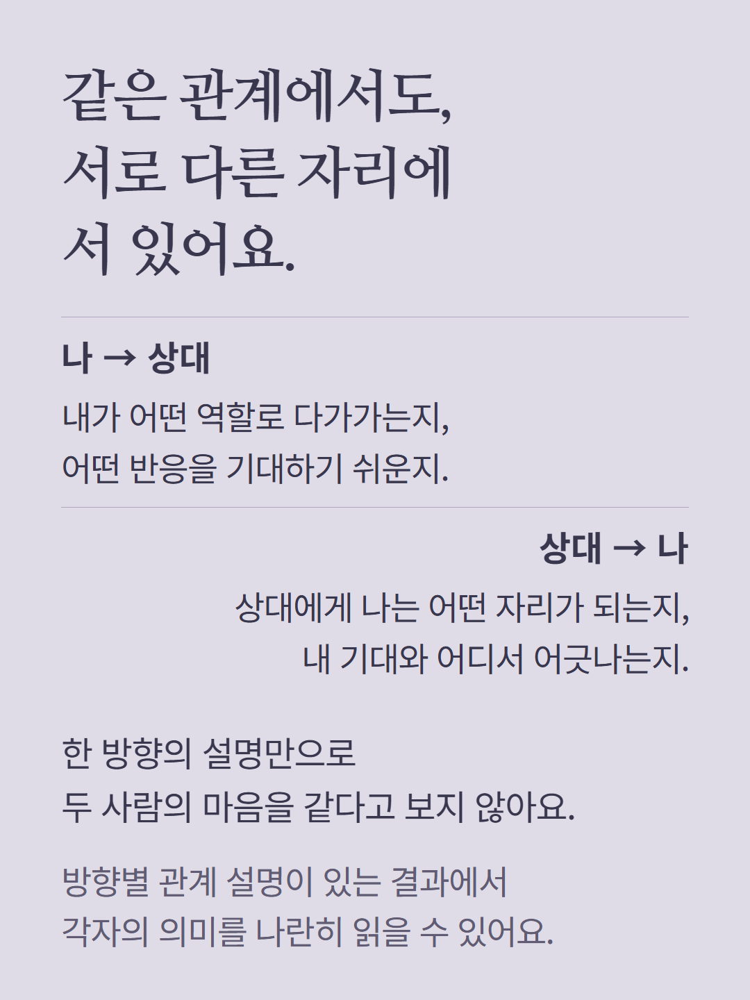
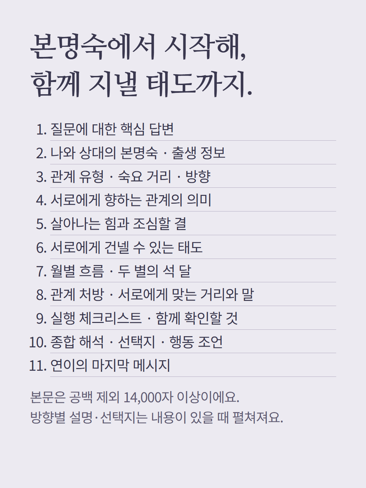
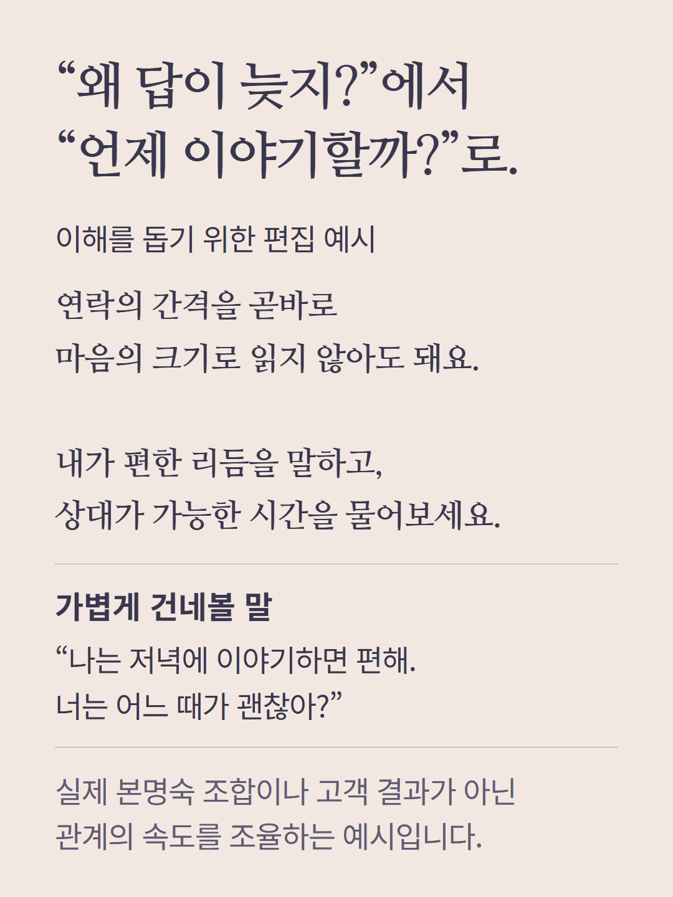
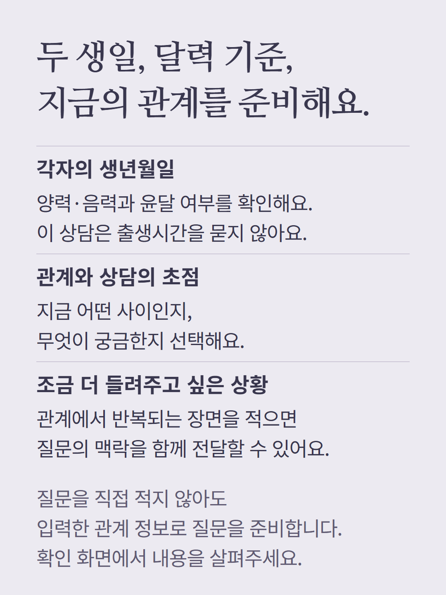
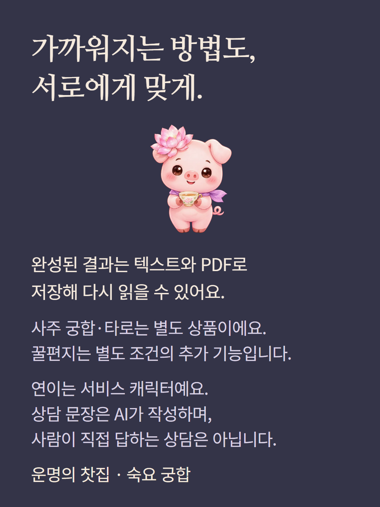

두 사람의 생년월일과 달력 기준으로 본명숙과 27숙 관계를 읽는 숙요 궁합입니다. 본명숙·관계 유형·거리·방향을 중심으로 안내하며 성공 확률이나 상대의 속마음을 확정하지 않습니다. 도해와 문장은 이해를 돕기 위한 편집 예시이고 실제 고객 결과가 아닙니다. 방향별 설명·강점·주의점·선택지 등은 결과에 있는 내용만 표시됩니다. 사주 궁합과 타로는 별도 상품이며 꿀편지는 별도 조건의 추가 기능입니다. 연이는 서비스 캐릭터이고 상담 문장은 AI가 작성합니다.